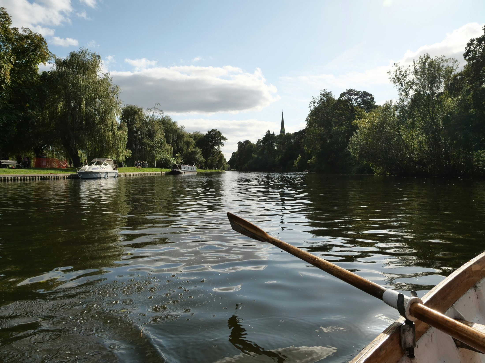
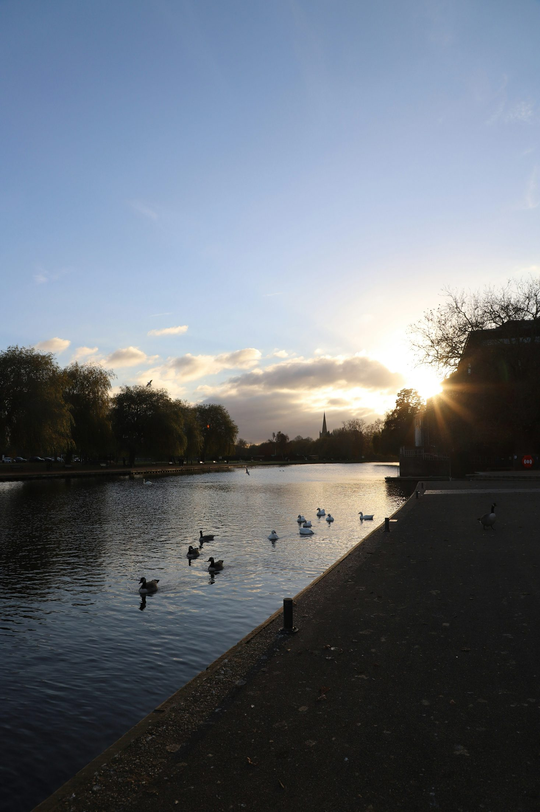
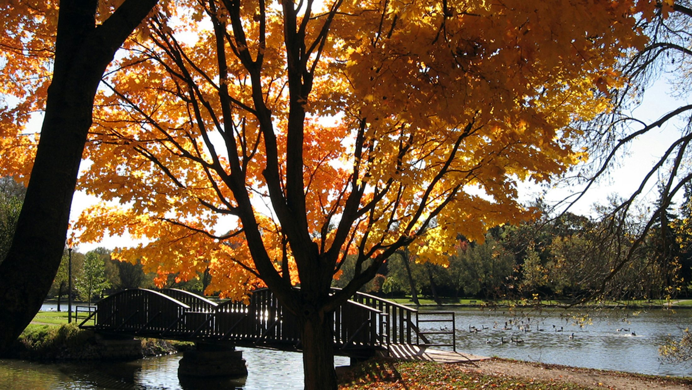
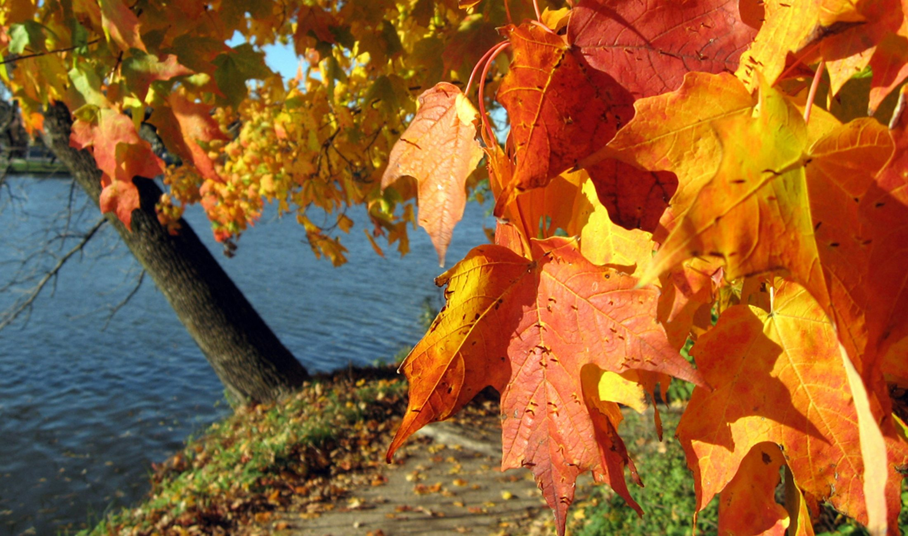

Real Photo Direction
Gallery & Visual References
Draft photo credits included

Avon River · Local image / Unsplash credit in assets/images/PHOTO_CREDITS.md

Theatre · Local image / Unsplash credit in assets/images/PHOTO_CREDITS.md

Downtown · Local image / Unsplash credit in assets/images/PHOTO_CREDITS.md

Gardens · Local image / Unsplash credit in assets/images/PHOTO_CREDITS.md

Fall Leaves · Local image / Unsplash credit in assets/images/PHOTO_CREDITS.md
Photo polish note: these are web-hosted Wikimedia/official-style visual references. Before publishing publicly, we should do a final image audit for exact licence attribution and replace any weak mood images with stronger location-specific photos.